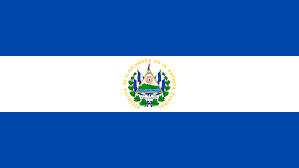

Aduana de Salvador

Funciones de Aduana
La Dirección General de Aduanas del El Salvador (DGA), se creó por Decreto Legislativo
N° 43, el 7 de mayo de 1936, publicado en el Diario Ofi cial N° 104, Tomo 120, de ese
mismo mes y año.
La DGA, es una dependencia del Ministerio de
Hacienda, y tiene la responsabilidad de garantizar el
cumplimiento de leyes y reglamentos que regulan el
tráfi co internacional de mercancías. Es dirigida por un
Director General.
La estructura orgánica de la DGA, se estableció
mediante el Reglamento Orgánico Funcional, dictado
mediante Decreto Ejecutivo No. 44, el 18 de mayo
de 1994 y publicado en el Diario Ofi cial No. 108,
Tomo 323, el 10 de Junio de ese mismo año. Dicho
Reglamento fue modifi cado, por Decreto Ejecutivo No. 114, el 12 de octubre de 1998.
Asimismo, se regula mediante la nueva Ley Orgánica de Aduanas (2006).
A través del Reglamento Orgánico Funcional, se faculta al Director General a dictar
las normas necesarias a efecto de desarrollar o reestructurar la organización interna
de la Dirección General de Aduanas con el fi n de permitir a la Institución readecuar su
estructura orgánica funcional. integrada por tres niveles: Directivo, Ejecutivo y Operativo,
La DGA, mantiene una constante modernización en sus sistemas, respondiendo a las
exigencias internacionales en materia aduanera, de comercio exterior y de aseguramiento
de la calidad en el servicio, así como a la dinámica acelerada del comercio internacional
en el marco de la globalización de las economías en un ambito de facilitación y
transparencia con su usuarios directos e indirectos que deseen consultarle.
La evolución del servicio aduanero en El Salvador, ha estado íntimamente ligada a la
forma en que ha cambiando la economía del pais, dependiendo en cierta medida de la
tendencia económica predominante.
Una primera etapa en nuestra actividad económica abarco el periodo desde 1950
hasta 1980, durante los cuales las funciones de la Aduana persiguieron fi nes casi
exclusivamente rentísticos, lo cual contribuyó a convertirla en una de las fuentes
recaudadoras más importante del Estado Salvadoreño
| Exportación |
Importación |
| Camisetas de Puntos |
Petrolio Refinado |
| Suéteres de Puntos |
Equipo de transmición |
| Condensadores Electricos |
Juegos de generación eléctricas |
| Azucar en bruto |
Gas Petrolio |
| Tapas de Plásticos |
Medicamentos Envasados |
Importación y Exportación
| Aduanas |
| Aduana de Acajutla |
Aduana de Cutuco |
Aduanas del País
| Aranceles |
Los aranceles es de 13% |
Araceles del País